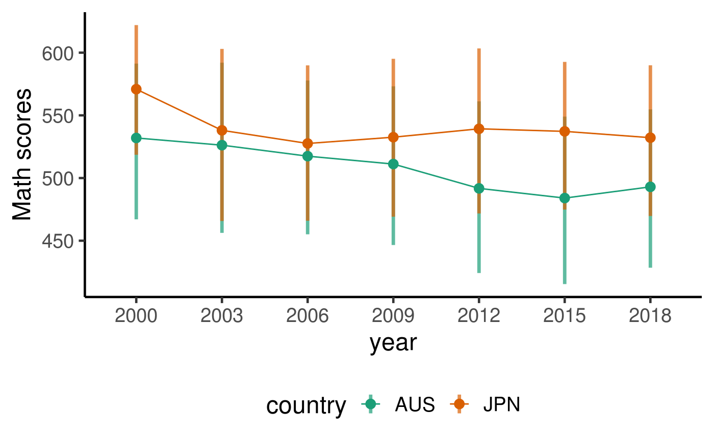
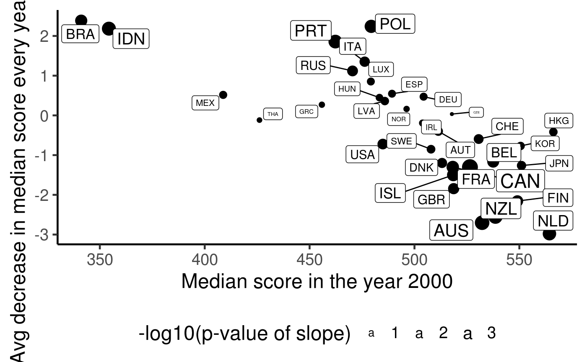
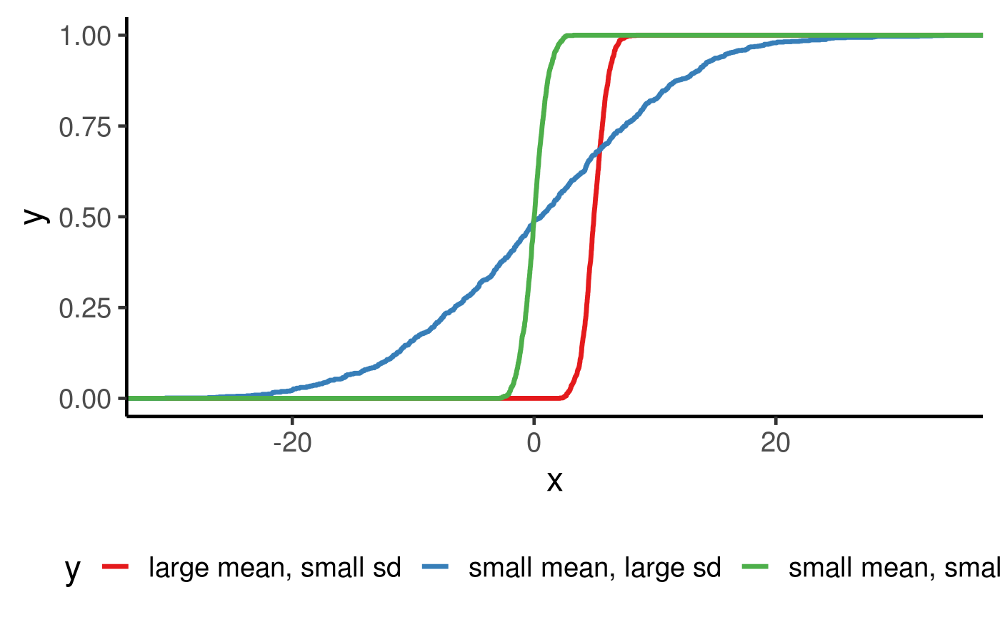
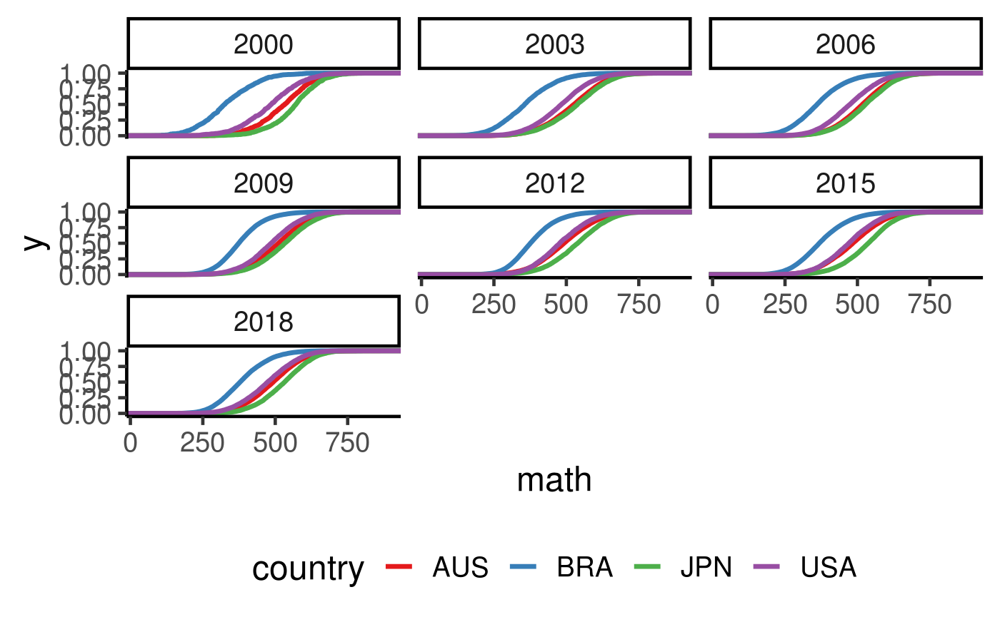

Visualise differential distribution between countries
Vignette Author
2020-06-05
visualise_distribution.RmdSome prelim/working thoughts…
We put forward the possibility that (despite?) the apparent decreasing trend in the performance of Australian students in the PISA standardised testing, there are more nuiances in this data than simply a decrease in the average test scores.
One thing that we should be aware of is that there is a huge individual variability for each country.
We will attempt to answer these questions via the maths test score.
library(tidyverse)
## ── Attaching packages ─────────────────────────────────────── tidyverse 1.3.0 ──## ✔ ggplot2 3.3.1 ✔ purrr 0.3.4
## ✔ tibble 3.0.1 ✔ dplyr 1.0.0
## ✔ tidyr 1.1.0 ✔ stringr 1.4.0
## ✔ readr 1.3.1 ✔ forcats 0.5.0## ── Conflicts ────────────────────────────────────────── tidyverse_conflicts() ──
## ✖ dplyr::filter() masks stats::filter()
## ✖ dplyr::lag() masks stats::lag()Check for dupes
data(student) student %>% janitor::get_dupes(country, year, school_id, student_id)
Simplified boxplot
selected_country_avg = student %>% filter(country %in% selected_countries) %>% group_by(year, country) %>% summarise( math_p25 = quantile(math, 0.25, na.rm = TRUE), math_p50 = quantile(math, 0.50, na.rm = TRUE), math_p75 = quantile(math, 0.75, na.rm = TRUE))
## `summarise()` regrouping output by 'year' (override with `.groups` argument)student %>% filter(country %in% selected_countries, year == 2003)
## # A tibble: 17,258 x 22
## year country school_id student_id mother_educ father_educ gender computer
## <fct> <fct> <fct> <fct> <fct> <fct> <fct> <fct>
## 1 2003 AUS 00001 00001 less than … ISCED 3A male no
## 2 2003 AUS 00001 00002 ISCED 3A ISCED 3A male yes
## 3 2003 AUS 00001 00003 ISCED 3A ISCED 2 female yes
## 4 2003 AUS 00001 00004 ISCED 3B, C ISCED 3A female yes
## 5 2003 AUS 00001 00005 ISCED 3B, C ISCED 3B, C female yes
## 6 2003 AUS 00001 00006 ISCED 3B, C ISCED 3A male yes
## 7 2003 AUS 00001 00007 ISCED 3B, C ISCED 3B, C female yes
## 8 2003 AUS 00001 00008 ISCED 2 ISCED 2 male no
## 9 2003 AUS 00001 00009 <NA> <NA> male yes
## 10 2003 AUS 00001 00010 less than … ISCED 3B, C female yes
## # … with 17,248 more rows, and 14 more variables: internet <fct>, math <dbl>,
## # read <dbl>, science <dbl>, stu_wgt <dbl>, desk <fct>, room <fct>,
## # dishwasher <fct>, television <fct>, computer_n <fct>, car <fct>,
## # book <fct>, wealth <dbl>, escs <dbl>selected_country_avg %>% ggplot(aes(x = year, y = math_p50, colour = country, fill = country)) + geom_linerange(aes(ymin = math_p25, ymax = math_p75), size = 1.2, alpha = 0.7) + geom_point(size = 3) + geom_line(aes(group = country)) + scale_fill_brewer(palette = "Dark2") + scale_colour_brewer(palette = "Dark2") + labs(y = "Math scores")

By the looks of the simplified boxplot above, there is indeed a large spread of test score. Focusing on the IQR (Q3 - Q1, represented by the shaded rectangles), the spread is about 150-200 scores, which is quite large. The overlaps of the middle 50% of students between JPN and AUS is also quite large.
Is the decreasing trend a more general trend around the world?
# quant_fns = function(x){ # q = quantile(x = x, probs = c(0.01, 0.05, 0.25, 0.50, 0.75, 0.95, 0.99), na.rm = TRUE) # list(tibble(quant = names(q), # values = q)) # } # # country_summ = student %>% # mutate(year = year - 2000) %>% # group_by(year, country) %>% # summarise(quant = quant_fns(math)) %>% # ungroup() %>% # unnest(quant) country_summ = student %>% mutate( year = year %>% as.character %>% as.integer(), year = year - 2000) %>% group_by(year, country) %>% summarise(math_p50 = quantile(math, 0.5, na.rm = TRUE)) %>% ungroup()
## `summarise()` regrouping output by 'year' (override with `.groups` argument)country_lm = country_summ %>% group_by(country) %>% filter(n() == 7) %>% ## 7 survey years and 7 quantile values were calculated nest() %>% mutate( lm = map(.x = data, ~ lm(math_p50 ~ year, data = .x)), lm_tidy = map(lm, broom::tidy)) %>% select(country, lm_tidy) %>% unnest(lm_tidy) %>% select(country, term, estimate, p.value) %>% mutate(term = ifelse(term == "(Intercept)", "int", term)) %>% pivot_longer(cols = c("estimate", "p.value"), names_to = "names", values_to = "values") %>% pivot_wider(names_from = c("term", "names"), values_from = "values") country_lm %>% ggplot(aes(x = int_estimate, y = year_estimate, size = -log10(year_p.value), label = country)) + geom_point() + geom_label_repel() + theme(legend.position = "bottom") + labs(x = "Median score in the year 2000", y = "Avg decrease in median score every year since 2000", size = "-log10(p-value of slope)")

Some explanation: + Only countries who participated in all 7 surveys are included. + Due to centering of the years, the x-axis is the median score for the year 2000. + The y-axis is the avg decrease in the median score per year since 2000. + The size of point/label indicates the statistical significance of the avg decrease. + If a country had a good education performance in the year 2000, then it often leaves much little room to improve. In fact, almost every country with a median score past 500 tends to have a worse education performance over the years. + Countries that has a low performance in the year 2000 tend to improve their scores rather than decrease.
Is mean/median the best summary of the data?
I can agree that there is a huge variability in the individual test scores, so maybe more complex modelling (?linear mixed models?) could help??
But just because there is a large variability in the data, I don’t think it is completely meaningless to compare across countries. Sure, the original Conversation article produced figures that zoomed into the averaged data, which might exaggerated the decreasing trends, but the solution isn’t to resetting zoom to the whole range of the raw data. Because the average of many values (X-bar) will have a smaller spread than Xi’s.
I put forward the argument that we should consider visualising the raw scores without any summarisation. This might be achived through ECDF. Each bump in the ECDF curve is a raw data point. So instead of trying to come up with a summarisation of location or spread, we can see the entire sample distribution of marks for each country. This way we can see the entire distribution of scores in a country and compare the distribution rather than comparing a simple one number summary and be lured into making false conclusions.
Using the simulation from Gaussian distribution below, we can see that a difference in mean can be characterised by a horizontal shift (because the red curve is right of the green, it thus has a higher mean than green) and a small sd is characterised by a sharp increase in the middle of the curve.
set.seed(123) bind_rows( tibble(x = rnorm(1000, 0, 1), y = "small mean, small sd") , tibble(x = rnorm(1000, 0, 10), y = "small mean, large sd"), tibble(x = rnorm(1000, 5, 1), y = "large mean, small sd")) %>% ggplot(aes(x = x, colour = y)) + stat_ecdf(geom = "step", size = 1.2) + scale_colour_brewer(palette = "Set1")

We compute the ECDF/EPDF of four selected countries below.
student %>% filter(country %in% c("AUS", "USA", "JPN", "BRA")) %>% ggplot(aes(x = math, colour = country)) + geom_density() + facet_wrap(~year) + scale_colour_brewer(palette = "Set1")
## Warning: Removed 6414 rows containing non-finite values (stat_density).
student %>% filter(country %in% c("AUS", "USA", "JPN", "BRA")) %>% ggplot(aes(x = math, colour = country)) + stat_ecdf(geom = "step", size = 1.2) + facet_wrap(~year) + scale_colour_brewer(palette = "Set1")
## Warning: Removed 6414 rows containing non-finite values (stat_ecdf).
Interesting findings: + In most cases, AUS, USA and JPN share quite similar gradient of ECDF, which might be an indication that they have similar spread. BRA tends to have a bit of sharper increase. So that could imply some advantages in favour of the top students. + If the argument is that an average student in JPN does better than an average student in AUS, then we can now refine this statement to use a precise statement using quantiles and distributions. E.g. a student who stores in the top 50% of JPN student population is able to score better than 66.5% of AUS student population. But of course, this gao narrows when you go towards the top of the distributions.
student %>% filter(country == "JPN", year == 2018) %>% pull(math) %>% median
## [1] 532.182## [1] 0.6653121## 90%
## 636.917## [1] 0.9445106Mixed model
library(lme4) aus_data = student %>% filter(country == "AUS") # lm(math ~ escs + gender, data = aus_data) %>% summary obj = lmer(math ~ escs + gender + (escs + gender|year/school_id), data = aus_data) summary(obj) # plot(obj) # qqnorm(residuals(obj))
## R version 4.0.0 (2020-04-24)
## Platform: x86_64-apple-darwin17.0 (64-bit)
## Running under: macOS Catalina 10.15.5
##
## Matrix products: default
## BLAS: /Library/Frameworks/R.framework/Versions/4.0/Resources/lib/libRblas.dylib
## LAPACK: /Library/Frameworks/R.framework/Versions/4.0/Resources/lib/libRlapack.dylib
##
## locale:
## [1] en_US.UTF-8/en_US.UTF-8/en_US.UTF-8/C/en_US.UTF-8/en_US.UTF-8
##
## attached base packages:
## [1] stats graphics grDevices utils datasets methods base
##
## other attached packages:
## [1] ggrepel_0.8.2 broom_0.5.6 learningtower_0.0.0.9000
## [4] forcats_0.5.0 stringr_1.4.0 dplyr_1.0.0
## [7] purrr_0.3.4 readr_1.3.1 tidyr_1.1.0
## [10] tibble_3.0.1 ggplot2_3.3.1 tidyverse_1.3.0
##
## loaded via a namespace (and not attached):
## [1] tidyselect_1.1.0 xfun_0.14 haven_2.3.1 lattice_0.20-41
## [5] colorspace_1.4-1 vctrs_0.3.0 generics_0.0.2 htmltools_0.4.0
## [9] yaml_2.2.1 utf8_1.1.4 blob_1.2.1 rlang_0.4.6
## [13] pkgdown_1.5.1.9000 pillar_1.4.4 withr_2.2.0 glue_1.4.1
## [17] DBI_1.1.0 RColorBrewer_1.1-2 dbplyr_1.4.4 modelr_0.1.8
## [21] readxl_1.3.1 lifecycle_0.2.0 munsell_0.5.0 gtable_0.3.0
## [25] cellranger_1.1.0 rvest_0.3.5 memoise_1.1.0 evaluate_0.14
## [29] labeling_0.3 knitr_1.28 fansi_0.4.1 Rcpp_1.0.4.6
## [33] backports_1.1.7 scales_1.1.1 desc_1.2.0 jsonlite_1.6.1
## [37] farver_2.0.3 fs_1.4.1 hms_0.5.3 digest_0.6.25
## [41] stringi_1.4.6 grid_4.0.0 rprojroot_1.3-2 cli_2.0.2
## [45] tools_4.0.0 magrittr_1.5 crayon_1.3.4 pkgconfig_2.0.3
## [49] MASS_7.3-51.5 ellipsis_0.3.1 xml2_1.3.2 reprex_0.3.0
## [53] lubridate_1.7.8 assertthat_0.2.1 rmarkdown_2.2 httr_1.4.1
## [57] rstudioapi_0.11 R6_2.4.1 nlme_3.1-147 compiler_4.0.0